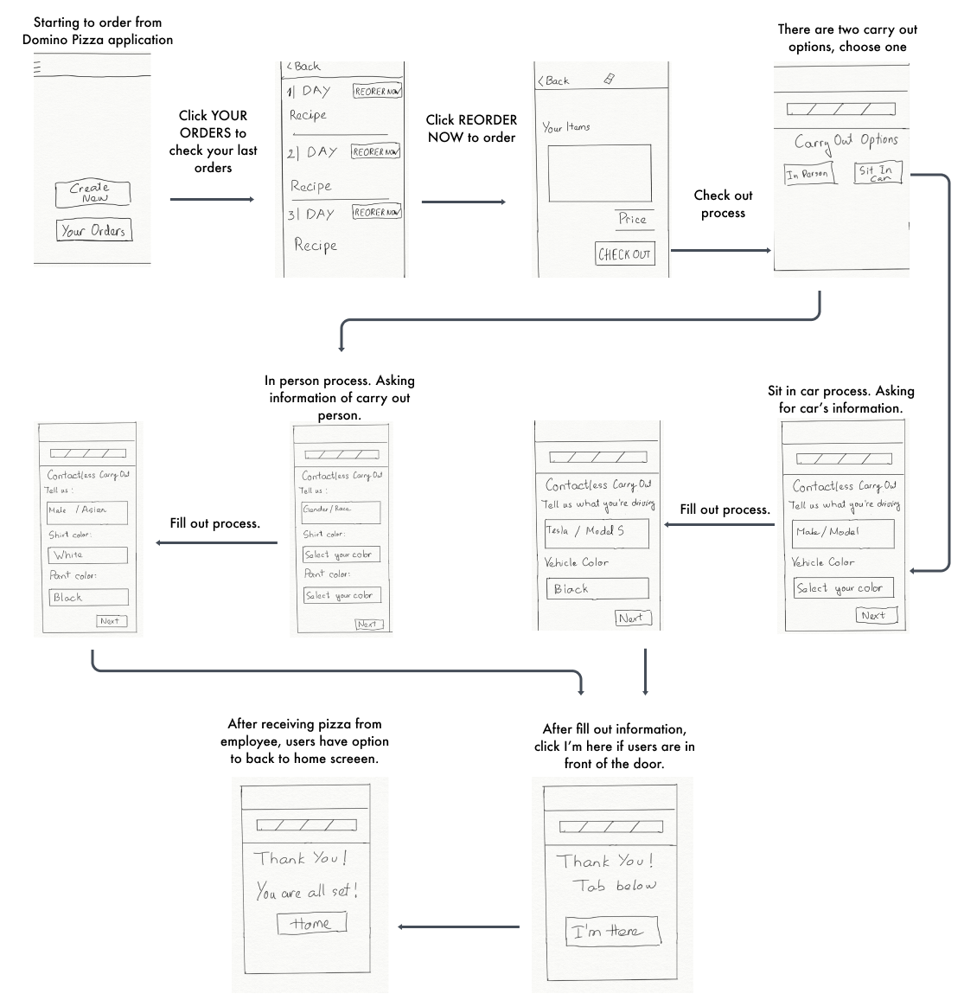
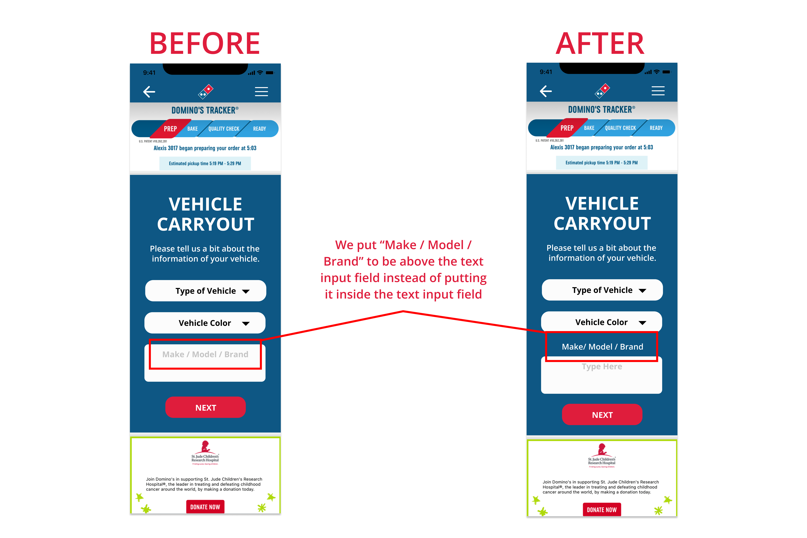

Team: An Huynh (me); Tam Tran
My role: UX Research and Designer, Prototype
Context: Domino's Pizza Mira Mesa, San Diego
Methods: Research, User Interview, User Testing
How can we improve the quality of service for customers who ordered CARRYOUT using Domino's Applications under the pandemic?
Background: During the pandemic, many customers prefer ordering Domino's pizza through the app, but carryout customers often experience long wait times because in-app orders are mixed with in-store orders. Additionally, only one person is allowed inside the store at a time, forcing others to wait in line outside. To improve the experience, we plan to redesign the Domino's app with a focus on reducing wait times and minimizing contact for carryout customers.
Our main research goal is to gain a deeper understanding of users' perspectives, recognizing that everyone has unique viewpoints. As designers, we understand that without proper user research, our design could be biased, a common issue in many global design projects. We have chosen interviews as our research method because they allow us to engage in in-depth conversations with users through open-ended questions. This approach will provide us with rich qualitative data for analysis. Our participants, who are familiar with using apps to save time and stay safe during the pandemic, will be interviewed via phone or Zoom. We plan to interview 5 to 7 participants, all of whom are regular pizza eaters and align with the goals of our project.
1) Most of the people we interviewed, including Domino's employees, said
that customers are waiting longer than their ideal time during the pandemic.
2) Some people we interviewed felt not fair because they were placed in
the order line even though they came to carry out their order.
3) The employee also complained that they sometimes don’t have enough
space for cooked-pizzas (keep warm before pick-up) because of stacked
orders.
4) Most participants are okay with waiting line but they prefer to reduce
contact with employees and other customers as much as possible in order to
be safer.
5) Additionally, a few participants mention that it would be great to
reduce the time wearing a mask, since they are not comfortable with
wearing it. Therefore, they prefer the better options for carry out their
food if it reduce wearing mask time unless mask is necessary. Also, they
do not have to stand outside, especially if there are many other people
also waiting for their food.
How might we help customers spend less time on waiting to save their time?
How might we help customers reduce time of wearing masks?
How might we help customers reduce contact with other people under the
pandemic?
How might we help employees have an easier time noticing when customers
come to pick up?
How might we help employees reduce losing their customers because they
have to wait for their pizza for a long time?
How might we help employees not feel frustrated because there are too many
customers come at the same time?
Flow 1: User Flow 1 is designed for both Adam and Helen personas because it offers a new feature which helps customers to save more time and employees to identify customers easier. Instead of directly asking customer’s or vehicle’s information, this flow allows employees to have enough information to know who is in front of the door and what their order is. For users, this flow reduces contact with other people under the pandemic which is very important for user’s health.
Flow 2: Similar to User Flow 1, User Flow 2 is designed for both personas mentioned above, and the flow reduces contact with other people under the pandemic which is very important for user’s health, by having enough information before giving the food instead of directly asking customers. Nevertheless, there are a few differences in the process. Instead of showing codes in User Flow 1, users can enter their information about themselves, including their appearance for picking up in person. While the process for “In Car” has the same UX flow, it is actually a little bit different about details in Sketches section.

Prototype 1: For this prototype, it has two options to pick up, which are “In Person” and “Contactless” (or “In Car”). For “In Person”, it has a number on the app that helps employees recognize which food they should give to the particular customer. When customers arrive, they can show their numbers in front of the restaurant to let employees know. For “Contactless”, it has one dropdown option to choose for the type of vehicle (motorcycle, sedan, suv, truck, etc.), and one input field for license plate number. With that information of the vehicle, it helps employees have an easier time to recognize which vehicle customers are in, in order to quickly give the food to them.

Prototype 2: Similarly, Prototype 2 also has the same two options to pick up. However, there are a few differences in details of what information customers can provide to help employees. For “In Person”, it asks for the description of customers’ appearance, including “Gender/race”, “Shirt Color”, and “Pant Color”. Thus, employees can recognize different customers more easily with different details about each customer. For “In Car”, it asks for the “Make/Model”, and “Vehicle Color”. Similar to Prototype 1, “In Car” option helps employees have an easier time to recognize which vehicle customers are in, in order to quickly give the food to them.
What users liked most about Prototype 1 was it was more simple in “In Person” option, since it only showed the number to confirm with the employees. While, what they liked most about Prototype 2 was they did not have to type license plate numbers, which many people did not remember them, and had to go out of the vehicle and check for the numbers.
For Prototype 1, the only confusion was the confirmation number of the “In Person” option, since it was not descriptive enough in order to guide customers what to do with it. While, there was no struggling or confusion when they used Prototype 2.
Overall, they preferred to use Prototype 1, since it was more simple to use, and had less details to fill out.
For the “In Person” option, they preferred Prototype 1, because they did not like to fill out details about their appearance. Additionally, they mentioned that asking about “Gender/race” might be sensitive to many people, which may lead to uncomfortable situations.
For the “In Car” option, they did not prefer either prototype. Nevertheless, one of the participants suggested having mix options from both prototypes for the “In Car” option including “Type of Vehicle”, “Make/Model”, and “Vehicle Color”.
This high-fidelity prototype combines elements from both of our original
UX flows from Milestone 3, based on user feedback. Users expressed a
preference for certain features from each flow, so we integrated the
most valued aspects into a single design. While the core structure of
the flow remained unchanged, the process of selecting and merging the
features took some time to ensure the best user experience.
Since our low-fidelity prototypes closely mirrored our original UX flows,
the process was similar—combining the most valuable features from both
prototypes into one cohesive design. We found that gathering user feedback
was incredibly valuable, as it allowed us to gain insights from different
perspectives. Additionally, we discovered that there were details we hadn't
initially considered in our design process. The feedback from users was
instrumental in identifying these areas for improvement, helping us refine
the overall design.
For the next steps, we plan to conduct another round of testing on our
high-fidelity prototype to gather further feedback, particularly on the
visual aspects. Additionally, we will take time to reflect on our design
process, identifying any areas for improvement. This will help us refine
the prototype and ensure we create a more insightful and comprehensive
case study.


After feedback, we decided to use the alternative screen for “Vehicle Carryout”. For the original screen, when users typed information in “Make / Model / Brand”, the word “Make / Model / Brand” would disappear. If users forgot what information they needed to type in, they had to delete everything and started over again. Therefore, putting the word “Make / Model / Brand” above the text input field instead of putting it inside would help users be able to avoid that situation.
Working in a group doesn't automatically guarantee the best outcomes; it's effective communication that truly drives success. When ideas are shared openly, feedback is valued, and everyone is aligned, that's when the best products are created.
A great designer is someone who excels at communication—both with users and with fellow designers. By engaging with users, you gain a deeper understanding of the challenges they face. Meanwhile, collaborating with other designers helps you discover innovative solutions to address those challenges, creating a more effective and thoughtful design.
Thanks for reading!